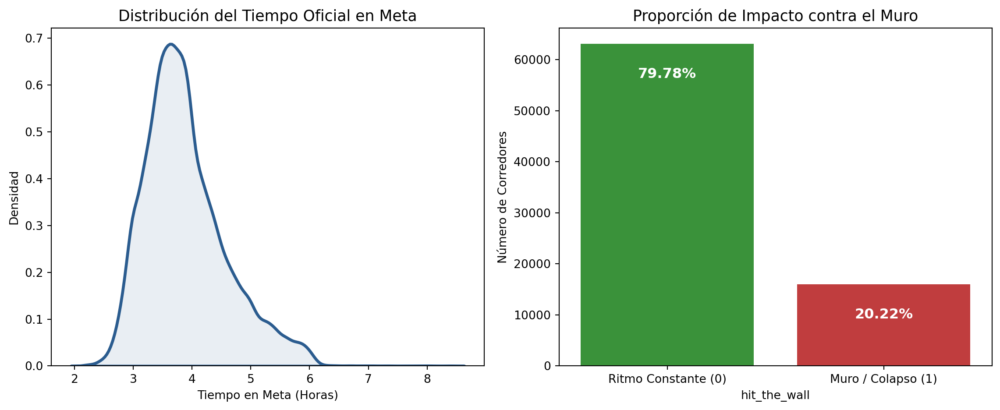
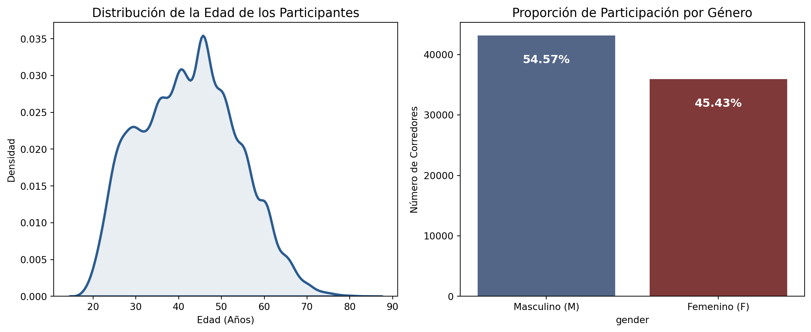
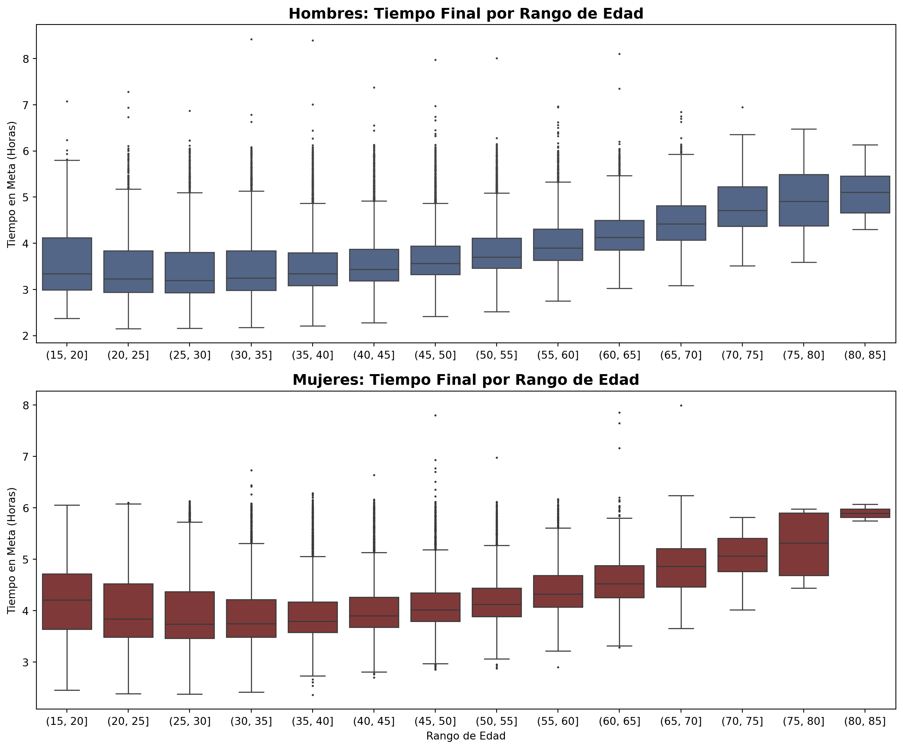
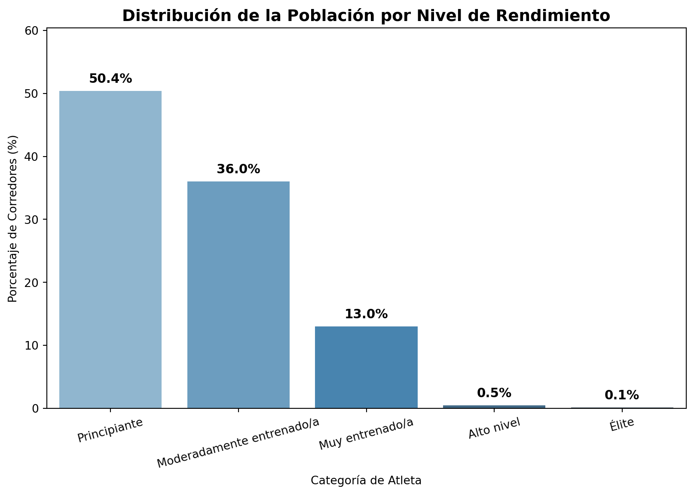
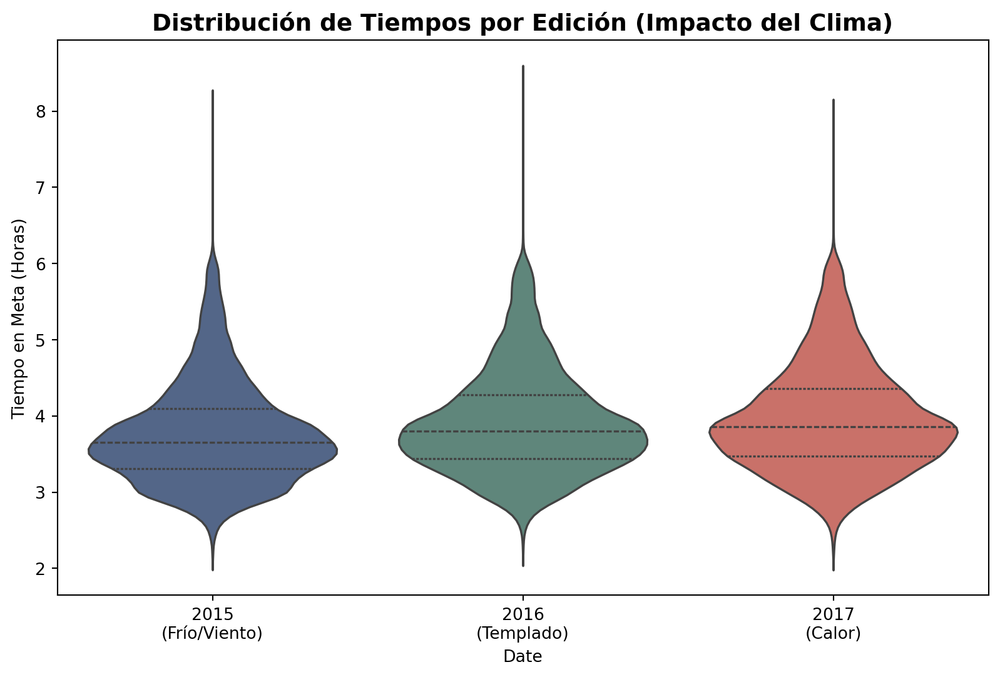

Ver código
import pandas as pd
import numpy as np
import matplotlib.pyplot as plt
import seaborn as sns
from scipy import statsUna vez finalizada la fase de preprocesamiento e ingeniería de variables, disponemos de un conjunto de datos consolidado, depurado y enriquecido. El objetivo de este capítulo es desarrollar un Análisis Exploratorio de Datos (EDA) estructurado que nos permita comprender más acerca de los datos que tenemos y la relación entre sus distintas variables.
Comenzamos importando las librerías necesarias para esta sección
import pandas as pd
import numpy as np
import matplotlib.pyplot as plt
import seaborn as sns
from scipy import statsProcedemos a la lectura del archivo de datos unificado de las 3 ediciones junto con todos los cambios realizados en el capítulo de preprocesado.
df_boston = pd.read_parquet("../data/processed/boston_post_eda.parquet")El objetivo de esta sección es comprender mejor la distribución de las variables por separado. Para ello, comenzamos revisando la distribución de las dos variables objetivo.
hit_the_wall y official_time)Nuestro estudio aborda dos enfoques predictivos distintos: un problema de regresión sobre el tiempo final en meta (official_time) y un problema de clasificación binaria para la detección del colapso fisiológico (hit_the_wall). A continuación, inspeccionamos la composición y distribución de ambas metas.
fig, axes = plt.subplots(1, 2, figsize=(12, 5))
# 1. Distribución del Tiempo Oficial (sólo curva de densidad KDE)
tiempo_horas = df_boston['official_time'] / 3600
sns.kdeplot(
tiempo_horas, ax=axes[0], color="#2b5c8f", linewidth=2.5,
fill=True, alpha=0.1
)
axes[0].set_title("Distribución del Tiempo Oficial en Meta", fontsize=13)
axes[0].set_xlabel("Tiempo en Meta (Horas)")
axes[0].set_ylabel("Densidad")
# 2. Proporción de la variable binaria del Muro (hit_the_wall)
muro_counts = df_boston['hit_the_wall'].value_counts()
sns.barplot(
x=muro_counts.index, y=muro_counts.values, ax=axes[1],
hue=muro_counts.index, palette=["#2ca02c", "#d62728"], legend=False
)
axes[1].set_title("Proporción de Impacto contra el Muro", fontsize=13)
axes[1].set_xticklabels(["Ritmo Constante (0)", "Muro / Colapso (1)"])
axes[1].set_ylabel("Número de Corredores")
# Añadimos las etiquetas de porcentaje de las barras
total_corredores = len(df_boston)
for p in axes[1].patches:
porcentaje = f"{100 * p.get_height() / total_corredores:.2f}%"
axes[1].annotate(
porcentaje,
(p.get_x() + p.get_width() / 2., p.get_height()),
ha='center', va='top', fontsize=12, fontweight='bold',
color='white',
xytext=(0, -20), textcoords='offset points'
)
plt.tight_layout()
plt.show()
La distribución del tiempo oficial presenta una clara asimetría positiva, concentrando a la gran mayoría del pelotón entre las 3 horas y cuarto y las 4 horas, lo que evidencia el alto nivel de exigencia y la criba previa de marcas que requiere esta competición.
Por su parte, la variable del muro muestra que el 79.78% de los atletas logran mantener un ritmo constante, mientras que el 20.22% colapsan y sufren una deceleración severa en la segunda mitad de la prueba. Esta proporción confirma que nos enfrentamos a un problema de clasificación desbalanceado, un factor clave que deberá tenerse en cuenta al configurar los pesos en los modelos predictivos posteriores.
En este apartado, vamos a visualizar la distribución de las variables de Edad y Género:
fig, axes = plt.subplots(1, 2, figsize=(12, 5))
sns.kdeplot(
df_boston['age'], ax=axes[0], color="#2b5c8f", linewidth=2.5,
fill=True, alpha=0.1
)
axes[0].set_title("Distribución de la Edad de los Participantes",
fontsize=13)
axes[0].set_xlabel("Edad (Años)")
axes[0].set_ylabel("Densidad")
orden_genero = ['M', 'F']
etiquetas_fijas = ['Masculino (M)', 'Femenino (F)']
colores_fijos = ["#4a6491", "#8c2d2d"]
genero_counts = df_boston['gender'].value_counts().reindex(orden_genero)
sns.barplot(
x=genero_counts.index,
y=genero_counts.values,
ax=axes[1],
order=orden_genero,
palette=colores_fijos,
hue=genero_counts.index,
legend=False
)
axes[1].set_title("Proporción de Participación por Género",
fontsize=13)
axes[1].set_xticklabels(etiquetas_fijas)
axes[1].set_ylabel("Número de Corredores")
total_n = len(df_boston)
for p in axes[1].patches:
porcentaje = f"{100 * p.get_height() / total_n:.2f}%"
axes[1].annotate(
porcentaje,
(p.get_x() + p.get_width() / 2., p.get_height()),
ha='center', va='top', fontsize=12, fontweight='bold',
color='white',
xytext=(0, -20), textcoords='offset points'
)
plt.tight_layout()
plt.show()
El perfil demográfico de los participantes refleja una población madura y equilibrada, con una mayoría de corredores situados en torno a los 45 años, lo que evidencia la experiencia necesaria para alcanzar los tiempos de calificación exigidos en Boston. En cuanto al género, la muestra presenta una paridad notable con un 54.57% de hombres frente a un 45.43% de mujeres, una distribución muy positiva para el entrenamiento de los posteriores modelos.
Con el objetivo de visualizar las nacionalidades de los atletas, a continuación vamos a identificar las 10 naciones con mayor volumen de participación.
# 1. Calculamos los 10 países
top_10_paises = (
df_boston['country_residence']
.value_counts()
.head(10)
.to_frame()
.reset_index()
)
top_10_paises.columns = ['País', 'Número de Corredores']
total_corredores = len(df_boston)
top_10_paises['Porcentaje (%)'] = (
(top_10_paises['Número de Corredores'] / total_corredores) * 100
).round(2)
print(top_10_paises.to_markdown(index=False))| País | Número de Corredores | Porcentaje (%) |
|---|---|---|
| USA | 64001 | 80.97 |
| CAN | 6135 | 7.76 |
| GBR | 1063 | 1.34 |
| MEX | 757 | 0.96 |
| GER | 569 | 0.72 |
| JPN | 488 | 0.62 |
| AUS | 469 | 0.59 |
| ITA | 466 | 0.59 |
| CHN | 427 | 0.54 |
| BRA | 425 | 0.54 |
La tabla refleja que EEUU es el país que más participantes concentra, casi el 81% de los participantes. De cara al entrenamiento de los modelos, manejar una variable con tantos países distintos puede complicar el aprendizaje del algoritmo debido a la gran cantidad de categorías con muy pocos datos. Por ello, una solución eficaz para mejorar la precisión será simplificar esta información en la fase de modelado, ya sea creando una variable binaria (EE. UU. frente al Resto del mundo) o agrupando los países por continentes, facilitando así que el modelo identifique patrones geográficos de rendimiento de manera más clara y robusta.
del genero_counts, muro_counts, tiempo_horas, top_10_paises, axes, colores_fijos, etiquetas_fijas, fig, orden_genero, p, porcentaje, total_corredores, total_nEl objetivo de esta sección es identificar patrones y relaciones entre variables a través de un análisis bivariado y multivariado.
A continuación, vamos a comprobar las distribuciones del tiempo tardado en la maratón en intervalos de 5 años de edad para ver cuál es el mejor rango de edad en cuanto a rendimiento. Además, vamos a agrupar dichos resultados por género para obtener una gráfica distinta para cada uno.
df_boston['age_bins'] = pd.cut(df_boston['age'],
bins=range(15, 86, 5))
fig, axes = plt.subplots(2, 1, figsize=(12, 10))
# Convertimos a horas para la visualización
df_boston['official_hours'] = df_boston['official_time'] / 3600
# Gráfico para Hombres
sns.boxplot(
data=df_boston[df_boston['gender'] == 'M'],
x='age_bins', y='official_hours', ax=axes[0], color="#4a6491", fliersize=1
)
axes[0].set_title("Hombres: Tiempo Final por Rango de Edad",
fontsize=14, fontweight='bold')
axes[0].set_xlabel("")
axes[0].set_ylabel("Tiempo en Meta (Horas)")
# Gráfico para Mujeres
sns.boxplot(
data=df_boston[df_boston['gender'] == 'F'],
x='age_bins', y='official_hours', ax=axes[1], color="#8c2d2d", fliersize=1
)
axes[1].set_title("Mujeres: Tiempo Final por Rango de Edad",
fontsize=14, fontweight='bold')
axes[1].set_xlabel("Rango de Edad")
axes[1].set_ylabel("Tiempo en Meta (Horas)")
plt.tight_layout()
plt.show()
El rendimiento en la maratón se mantiene increíblemente estable hasta los 50 años en ambos sexos, situándose la mediana de tiempo ligeramente por encima de las 3 horas en hombres y en torno a las 3 horas y media en mujeres. Es a partir de la franja de 50-55 años cuando se observa un punto de inflexión, donde los tiempos medios comienzan a subir de forma progresiva.
En esta sección, se el objetivo será graficar cuántos corredores hay en cada categoría
plt.figure(figsize=(10, 6))
# Calculamos porcentajes
cat_counts = df_boston['athlete_level'].value_counts(normalize=
True).sort_index() * 100
ax = sns.barplot(
x=cat_counts.index, y=cat_counts.values,
palette="Blues_d", hue=cat_counts.index, legend=False
)
plt.title("Distribución de la Población por Nivel de Rendimiento",
fontsize=14, fontweight='bold')
plt.ylabel("Porcentaje de Corredores (%)")
plt.xlabel("Categoría de Atleta")
plt.xticks(rotation=15)
# Añadimos las etiquetas de porcentaje sobre las barras
for p in ax.patches:
ax.annotate(f'{p.get_height():.1f}%',
(p.get_x() + p.get_width() / 2., p.get_height()),
ha='center', va='bottom', fontsize=11,
fontweight='bold', xytext=(0, 5),
textcoords='offset points')
plt.ylim(0, max(cat_counts.values) + 10)
plt.show()
La categorización de los atletas por nivel de rendimiento muestra una estructura piramidal muy clara. La mitad del pelotón (50.4%) se clasifica en el umbral de Principiante (marcas superiores a 3h 30m en hombres y 4h en mujeres), seguido de un 36.0% de corredores Moderadamente entrenados. Por su parte, la élite y los atletas de alto nivel representan una fracción muy baja, de apenas el 0.6% sumando ambos.
Una vez revisados la cantidad de corredores por categoría, en este apartado se va a evaluar la distribución de tiempos por año.
plt.figure(figsize=(10, 6))
paleta_clima = ["#4a6491", "#588c7e", "#d96459"]
sns.violinplot(
data=df_boston, x='Date', y='official_hours',
palette=paleta_clima, inner="quartile", hue='Date', legend=False
)
plt.title("Distribución de Tiempos por Edición (Impacto del Clima)",
fontsize=14, fontweight='bold')
plt.ylabel("Tiempo en Meta (Horas)")
# Ajustamos las etiquetas del eje X para que solo se vea el año
plt.xticks(ticks=[0, 1, 2], labels=['2015\n(Frío/Viento)',
'2016\n(Templado)', '2017\n(Calor)'])
plt.show()
Se observa que a medida que la edición avanza, los tiempos en media parecen ser mayores. Para confirmar esto, se va a realizar un test estadístico sobre la categoría Élite, ya que son los únicos corredores en los que se puede obtener una medida fiable de si el recorrido era más rápido o lento respecto al clima de esa edición
# 1. Filtramos solo los corredores de Élite
df_elite = df_boston[df_boston['athlete_level'] == 'Élite'].copy()
# 2. Creamos la tabla comparativa de medias para la Élite
tabla_clima = df_elite.groupby('Date').agg(
Media_Horas=('official_hours', 'mean'),
Desviacion=('official_hours', 'std'),
N=('official_hours', 'count')
).round(3)
# 3. Preparamos los datos para el ANOVA
grupos = (
[df_elite[df_elite['Date'] == d]['official_hours'] for d in df_boston['Date'].unique()])
f_stat, p_val = stats.f_oneway(*grupos)
print(tabla_clima.to_markdown())| Date | Media_Horas | Desviacion | N |
|---|---|---|---|
| 2015-04-20 | 2.372 | 0.174 | 29 |
| 2016-04-18 | 2.471 | 0.171 | 21 |
| 2017-04-17 | 2.448 | 0.185 | 36 |
print(f"\n**Resultado del test ANOVA en Élite:**")
print(f"- Estadístico F: {f_stat:.4f}")
print(f"- P-valor: {p_val:.4e}")
**Resultado del test ANOVA en Élite:**
- Estadístico F: 2.2921
- P-valor: 1.0742e-01Por lo que se puede observar en la tabla y en el p-valor, no existen diferencias significativas en sus tiempos medios a lo largo de las 3 ediciones.
Por último, vamos a evaluar el número de corredores que sufre el colapso en el muro según el nivel del atleta:
# Agrupamos por categoría y calculamos métricas
resumen_muro = df_boston.groupby('athlete_level', observed=True).agg(
Total_Corredores=('hit_the_wall', 'count'),
Sufren_Muro=('hit_the_wall', 'sum')
).reset_index()
# Calculamos el % dentro de cada categoría
resumen_muro['%_Impacto_Muro'] = (
(resumen_muro['Sufren_Muro'] / resumen_muro['Total_Corredores']) * 100
).round(2)
# Renombramos para la tabla final
resumen_muro.columns = ['Categoría', 'Nº Corredores',
'Casos de Muro', '% del Muro']
print(resumen_muro.to_markdown(index=False))| Categoría | Nº Corredores | Casos de Muro | % del Muro |
|---|---|---|---|
| Principiante | 39845 | 13164 | 33.04 |
| Moderadamente entrenado/a | 28452 | 2570 | 9.03 |
| Muy entrenado/a | 10262 | 243 | 2.37 |
| Alto nivel | 393 | 1 | 0.25 |
| Élite | 86 | 0 | 0 |
A medida que aumenta el nivel de entrenamiento del atleta, la probabilidad de sufrir un colapso en la segunda mitad de la prueba se desploma drásticamente. Mientras que 1 de cada 3 corredores principiantes (33.04%) choca contra el muro —víctimas de una gestión del ritmo menos madura y de una menor adaptación al consumo eficiente de glucógeno—, esta cifra se reduce a un 9.03% en los moderadamente entrenados y cae a un marginal 2.37% en el grupo de muy entrenados.
Por su parte, en las categorías superiores el muro es prácticamente inexistente (0.25% en Alto nivel y 0% en la Élite). Estos datos confirman que el colapso fisiológico no es un evento puramente aleatorio de la distancia de maratón, sino una variable fuertemente predecible y dependiente de la preparación de los atletas.